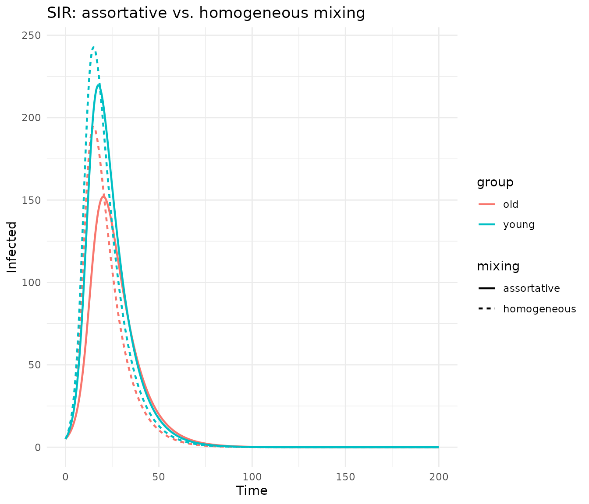
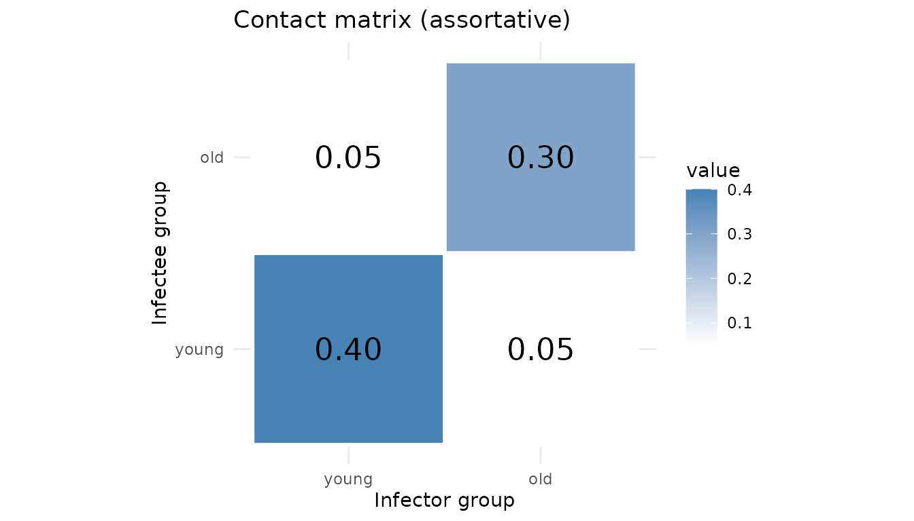
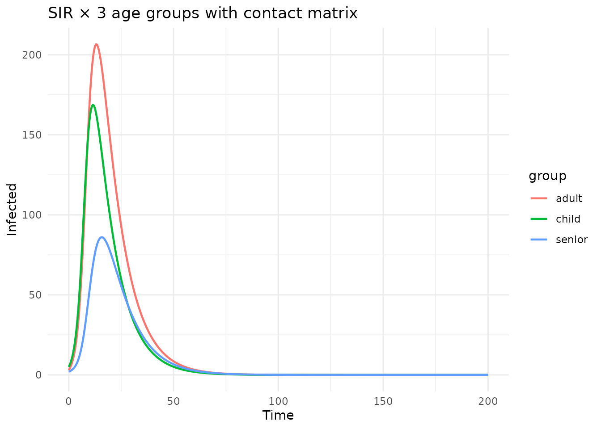
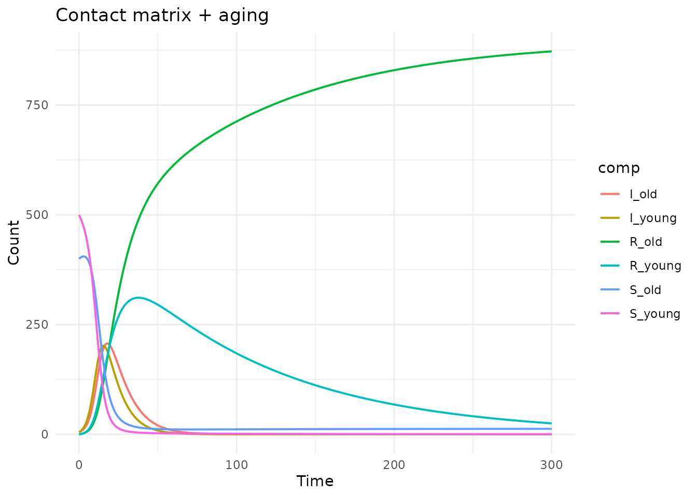

Contact matrix mixing
Simon Frost
2026-03-31
Source:vignettes/contact-matrix.Rmd
contact-matrix.RmdIntroduction
In age-stratified epidemiological models, the contact matrix (also called the WAIFW — “Who Acquires Infection From Whom” — matrix) describes how much contact occurs between different age groups. This is critical because transmission is rarely homogeneous: children tend to have more contacts with other children, adults with other adults, etc.
Without a contact matrix, each stratum’s infection depends only on its own group:
With a contact matrix , the force of infection on group sums infectious pressure from all groups:
The algebraicodin package supports this via the
mixing parameter in sf_stratify().
Basic example: SIR with 2 age groups
Stratify with a contact matrix
Pass mixing = list(infection = "C") to replace the
per-stratum beta with a contact matrix where entries
C_i_j represent the transmission rate from group
to group
:
sir_mix <- sf_stratify(sir, c("young", "old"),
flow_types = c(infection = "disease", recovery = "disease"),
mixing = list(infection = "C")
)
cat("Stocks:", paste(sf_snames(sir_mix), collapse = ", "), "\n")
#> Stocks: S_young, S_old, I_young, I_old, R_young, R_old
cat("Flows:", paste(sf_fnames(sir_mix), collapse = ", "), "\n")
#> Flows: infection_id_young, infection_id_old, recovery_id_young, recovery_id_old
cat("Params:", paste(sf_pnames(sir_mix), collapse = ", "), "\n")
#> Params: C_old_old, gamma, C_young_young, C_young_old, C_old_youngNote that beta has been absorbed into the contact matrix
— only gamma and the four C_*_* entries remain
as parameters.
Generated odin2 code
cat(sf_to_odin(sir_mix, type = "ode"))
#> C_old_old <- parameter()
#> gamma <- parameter()
#> C_young_young <- parameter()
#> C_young_old <- parameter()
#> C_old_young <- parameter()
#>
#> S_young0 <- parameter(0)
#> initial(S_young) <- S_young0
#> S_old0 <- parameter(0)
#> initial(S_old) <- S_old0
#> I_young0 <- parameter(0)
#> initial(I_young) <- I_young0
#> I_old0 <- parameter(0)
#> initial(I_old) <- I_old0
#> R_young0 <- parameter(0)
#> initial(R_young) <- R_young0
#> R_old0 <- parameter(0)
#> initial(R_old) <- R_old0
#>
#> N_young <- S_young + I_young + R_young
#> N_old <- S_old + I_old + R_old
#>
#> lambda_infection_young <- C_young_young * I_young / N_young + C_young_old * I_old / N_old
#> lambda_infection_old <- C_old_young * I_young / N_young + C_old_old * I_old / N_old
#>
#> v_infection_id_young <- lambda_infection_young * S_young
#> v_infection_id_old <- lambda_infection_old * S_old
#> v_recovery_id_young <- gamma * I_young
#> v_recovery_id_old <- gamma * I_old
#>
#> deriv(S_young) <- - v_infection_id_young
#> deriv(S_old) <- - v_infection_id_old
#> deriv(I_young) <- v_infection_id_young - v_recovery_id_young
#> deriv(I_old) <- v_infection_id_old - v_recovery_id_old
#> deriv(R_young) <- v_recovery_id_young
#> deriv(R_old) <- v_recovery_id_oldThe lambda_infection_* variables compute the force of
infection by summing over all source groups, weighted by the contact
matrix.
Simulate: assortative vs. homogeneous mixing
gen <- sf_to_odin_system(sir_mix, type = "ode")
# Assortative mixing: more within-group contact
pars_assort <- list(
gamma = 0.1,
C_young_young = 0.4, C_young_old = 0.05,
C_old_young = 0.05, C_old_old = 0.3,
S_young0 = 500, S_old0 = 400,
I_young0 = 5, I_old0 = 5,
R_young0 = 0, R_old0 = 0
)
# Homogeneous mixing: equal contact across groups
pars_homog <- pars_assort
pars_homog$C_young_young <- 0.25
pars_homog$C_young_old <- 0.25
pars_homog$C_old_young <- 0.25
pars_homog$C_old_old <- 0.25
times <- seq(0, 200, by = 0.5)
run_model <- function(pars) {
sys <- dust_system_create(gen(), pars)
dust_system_set_state_initial(sys)
res <- dust_system_simulate(sys, times)
dust_unpack_state(sys, res)
}
state_a <- run_model(pars_assort)
#> ── R CMD INSTALL ───────────────────────────────────────────────────────────────
#> * installing *source* package ‘odin.system3a5fe2dc’ ...
#> ** this is package ‘odin.system3a5fe2dc’ version ‘0.0.1’
#> ** using staged installation
#> ** libs
#> using C++ compiler: ‘g++ (Ubuntu 13.3.0-6ubuntu2~24.04.1) 13.3.0’
#> g++ -std=gnu++17 -I"/opt/R/4.5.3/lib/R/include" -DNDEBUG -I'/home/runner/work/_temp/Library/cpp11/include' -I'/home/runner/work/_temp/Library/dust2/include' -I'/home/runner/work/_temp/Library/monty/include' -I/usr/local/include -DHAVE_INLINE -fopenmp -fpic -g -O2 -Wall -pedantic -fdiagnostics-color=always -c cpp11.cpp -o cpp11.o
#> g++ -std=gnu++17 -I"/opt/R/4.5.3/lib/R/include" -DNDEBUG -I'/home/runner/work/_temp/Library/cpp11/include' -I'/home/runner/work/_temp/Library/dust2/include' -I'/home/runner/work/_temp/Library/monty/include' -I/usr/local/include -DHAVE_INLINE -fopenmp -fpic -g -O2 -Wall -pedantic -fdiagnostics-color=always -c dust.cpp -o dust.o
#> g++ -std=gnu++17 -shared -L/opt/R/4.5.3/lib/R/lib -L/usr/local/lib -o odin.system3a5fe2dc.so cpp11.o dust.o -fopenmp -L/opt/R/4.5.3/lib/R/lib -lR
#> installing to /tmp/RtmprzAO42/devtools_install_2c667d0f1b24/00LOCK-dust_2c666b3a823/00new/odin.system3a5fe2dc/libs
#> ** checking absolute paths in shared objects and dynamic libraries
#> * DONE (odin.system3a5fe2dc)
state_h <- run_model(pars_homog)
df <- rbind(
data.frame(time = times, value = state_a$I_young,
group = "young", mixing = "assortative"),
data.frame(time = times, value = state_a$I_old,
group = "old", mixing = "assortative"),
data.frame(time = times, value = state_h$I_young,
group = "young", mixing = "homogeneous"),
data.frame(time = times, value = state_h$I_old,
group = "old", mixing = "homogeneous")
)
ggplot(df, aes(x = time, y = value, colour = group, linetype = mixing)) +
geom_line(linewidth = 0.8) +
labs(title = "SIR: assortative vs. homogeneous mixing",
x = "Time", y = "Infected") +
theme_minimal()
With assortative mixing (high diagonal, low off-diagonal), the young group peaks higher and earlier due to its stronger within-group contact rate. With homogeneous mixing, both groups follow more similar trajectories.
Visualising the contact matrix
C <- matrix(c(0.4, 0.05, 0.05, 0.3), 2, 2,
dimnames = list(c("young", "old"), c("young", "old")))
df_C <- expand.grid(from = colnames(C), to = rownames(C))
df_C$value <- as.vector(C)
ggplot(df_C, aes(x = from, y = to, fill = value)) +
geom_tile(colour = "white", linewidth = 1) +
geom_text(aes(label = sprintf("%.2f", value)), size = 6) +
scale_fill_gradient(low = "white", high = "steelblue") +
labs(title = "Contact matrix (assortative)",
x = "Infector group", y = "Infectee group") +
theme_minimal() +
coord_equal()
Three age groups
sir_3 <- sf_stratify(sir, c("child", "adult", "senior"),
flow_types = c(infection = "disease", recovery = "disease"),
mixing = list(infection = "C")
)
cat("Num contact params:", sum(grepl("^C_", sf_pnames(sir_3))), "(3×3 matrix)\n")
#> Num contact params: 9 (3×3 matrix)
gen3 <- sf_to_odin_system(sir_3, type = "ode")
# Realistic-ish contact pattern: children mix most, seniors least
sys3 <- dust_system_create(gen3(), list(
gamma = 0.1,
C_child_child = 0.5, C_child_adult = 0.15, C_child_senior = 0.05,
C_adult_child = 0.15, C_adult_adult = 0.3, C_adult_senior = 0.1,
C_senior_child = 0.05, C_senior_adult = 0.1, C_senior_senior = 0.2,
S_child0 = 300, S_adult0 = 400, S_senior0 = 200,
I_child0 = 5, I_adult0 = 3, I_senior0 = 2,
R_child0 = 0, R_adult0 = 0, R_senior0 = 0
))
#> ── R CMD INSTALL ───────────────────────────────────────────────────────────────
#> * installing *source* package ‘odin.system659c5d81’ ...
#> ** this is package ‘odin.system659c5d81’ version ‘0.0.1’
#> ** using staged installation
#> ** libs
#> using C++ compiler: ‘g++ (Ubuntu 13.3.0-6ubuntu2~24.04.1) 13.3.0’
#> g++ -std=gnu++17 -I"/opt/R/4.5.3/lib/R/include" -DNDEBUG -I'/home/runner/work/_temp/Library/cpp11/include' -I'/home/runner/work/_temp/Library/dust2/include' -I'/home/runner/work/_temp/Library/monty/include' -I/usr/local/include -DHAVE_INLINE -fopenmp -fpic -g -O2 -Wall -pedantic -fdiagnostics-color=always -c cpp11.cpp -o cpp11.o
#> g++ -std=gnu++17 -I"/opt/R/4.5.3/lib/R/include" -DNDEBUG -I'/home/runner/work/_temp/Library/cpp11/include' -I'/home/runner/work/_temp/Library/dust2/include' -I'/home/runner/work/_temp/Library/monty/include' -I/usr/local/include -DHAVE_INLINE -fopenmp -fpic -g -O2 -Wall -pedantic -fdiagnostics-color=always -c dust.cpp -o dust.o
#> g++ -std=gnu++17 -shared -L/opt/R/4.5.3/lib/R/lib -L/usr/local/lib -o odin.system659c5d81.so cpp11.o dust.o -fopenmp -L/opt/R/4.5.3/lib/R/lib -lR
#> installing to /tmp/RtmprzAO42/devtools_install_2c664f220a2c/00LOCK-dust_2c6652148c82/00new/odin.system659c5d81/libs
#> ** checking absolute paths in shared objects and dynamic libraries
#> * DONE (odin.system659c5d81)
dust_system_set_state_initial(sys3)
res3 <- dust_system_simulate(sys3, seq(0, 200, by = 0.5))
state3 <- dust_unpack_state(sys3, res3)
t3 <- seq(0, 200, by = 0.5)
df3 <- data.frame(
time = rep(t3, 3),
infected = c(state3$I_child, state3$I_adult, state3$I_senior),
group = rep(c("child", "adult", "senior"), each = length(t3))
)
ggplot(df3, aes(x = time, y = infected, colour = group)) +
geom_line(linewidth = 0.8) +
labs(title = "SIR × 3 age groups with contact matrix",
x = "Time", y = "Infected") +
theme_minimal()
Children peak first and highest (highest contact rate), seniors peak last and lowest.
Contact matrix with aging
The mixing parameter works together with
cross_strata_flows:
sir_mix_age <- sf_stratify(sir, c("young", "old"),
flow_types = c(infection = "disease", recovery = "disease"),
cross_strata_flows = list(
list(name = "aging", from = "young", to = "old",
rate = quote(aging_rate * young), params = c("aging_rate"))
),
mixing = list(infection = "C")
)
cat("Flows:", paste(sf_fnames(sir_mix_age), collapse = ", "), "\n")
#> Flows: infection_id_young, infection_id_old, recovery_id_young, recovery_id_old, aging_S, aging_I, aging_R
cat("Params:", paste(sf_pnames(sir_mix_age), collapse = ", "), "\n")
#> Params: C_old_old, gamma, aging_rate, C_young_young, C_young_old, C_old_young
gen_ma <- sf_to_odin_system(sir_mix_age, type = "ode")
sys_ma <- dust_system_create(gen_ma(), list(
gamma = 0.1, aging_rate = 0.01,
C_young_young = 0.4, C_young_old = 0.1,
C_old_young = 0.1, C_old_old = 0.3,
S_young0 = 500, S_old0 = 400,
I_young0 = 5, I_old0 = 5,
R_young0 = 0, R_old0 = 0
))
#> ── R CMD INSTALL ───────────────────────────────────────────────────────────────
#> * installing *source* package ‘odin.systemd897bf7c’ ...
#> ** this is package ‘odin.systemd897bf7c’ version ‘0.0.1’
#> ** using staged installation
#> ** libs
#> using C++ compiler: ‘g++ (Ubuntu 13.3.0-6ubuntu2~24.04.1) 13.3.0’
#> g++ -std=gnu++17 -I"/opt/R/4.5.3/lib/R/include" -DNDEBUG -I'/home/runner/work/_temp/Library/cpp11/include' -I'/home/runner/work/_temp/Library/dust2/include' -I'/home/runner/work/_temp/Library/monty/include' -I/usr/local/include -DHAVE_INLINE -fopenmp -fpic -g -O2 -Wall -pedantic -fdiagnostics-color=always -c cpp11.cpp -o cpp11.o
#> g++ -std=gnu++17 -I"/opt/R/4.5.3/lib/R/include" -DNDEBUG -I'/home/runner/work/_temp/Library/cpp11/include' -I'/home/runner/work/_temp/Library/dust2/include' -I'/home/runner/work/_temp/Library/monty/include' -I/usr/local/include -DHAVE_INLINE -fopenmp -fpic -g -O2 -Wall -pedantic -fdiagnostics-color=always -c dust.cpp -o dust.o
#> g++ -std=gnu++17 -shared -L/opt/R/4.5.3/lib/R/lib -L/usr/local/lib -o odin.systemd897bf7c.so cpp11.o dust.o -fopenmp -L/opt/R/4.5.3/lib/R/lib -lR
#> installing to /tmp/RtmprzAO42/devtools_install_2c6622fb97e4/00LOCK-dust_2c6624d14819/00new/odin.systemd897bf7c/libs
#> ** checking absolute paths in shared objects and dynamic libraries
#> * DONE (odin.systemd897bf7c)
dust_system_set_state_initial(sys_ma)
res_ma <- dust_system_simulate(sys_ma, seq(0, 300, by = 0.5))
state_ma <- dust_unpack_state(sys_ma, res_ma)
t_ma <- seq(0, 300, by = 0.5)
df_ma <- data.frame(
time = rep(t_ma, 6),
value = c(state_ma$S_young, state_ma$S_old,
state_ma$I_young, state_ma$I_old,
state_ma$R_young, state_ma$R_old),
comp = rep(c("S_young", "S_old", "I_young", "I_old",
"R_young", "R_old"), each = length(t_ma))
)
ggplot(df_ma, aes(x = time, y = value, colour = comp)) +
geom_line(linewidth = 0.7) +
labs(title = "Contact matrix + aging",
x = "Time", y = "Count") +
theme_minimal()
Frequency vs. density dependence
The default mixing type is frequency-dependent (divided by ). For density-dependent transmission (no normalization), use:
Cross-validation with manual odin2
To verify the algebraic approach, let’s compare with a hand-written model:
manual_code <- "
C_a_a <- parameter()
C_a_b <- parameter()
C_b_a <- parameter()
C_b_b <- parameter()
gamma <- parameter()
S_a0 <- parameter(0)
I_a0 <- parameter(0)
R_a0 <- parameter(0)
S_b0 <- parameter(0)
I_b0 <- parameter(0)
R_b0 <- parameter(0)
initial(S_a) <- S_a0
initial(I_a) <- I_a0
initial(R_a) <- R_a0
initial(S_b) <- S_b0
initial(I_b) <- I_b0
initial(R_b) <- R_b0
N_a <- S_a + I_a + R_a
N_b <- S_b + I_b + R_b
lambda_a <- C_a_a * I_a / N_a + C_a_b * I_b / N_b
lambda_b <- C_b_a * I_a / N_a + C_b_b * I_b / N_b
deriv(S_a) <- -lambda_a * S_a
deriv(I_a) <- lambda_a * S_a - gamma * I_a
deriv(R_a) <- gamma * I_a
deriv(S_b) <- -lambda_b * S_b
deriv(I_b) <- lambda_b * S_b - gamma * I_b
deriv(R_b) <- gamma * I_b
"
sir_m <- sf_stratify(sir, c("a", "b"),
flow_types = c(infection = "disease", recovery = "disease"),
mixing = list(infection = "C"))
gen_alg <- sf_to_odin_system(sir_m, type = "ode")
gen_man <- function() odin(manual_code)
pars <- list(
C_a_a = 0.35, C_a_b = 0.15, C_b_a = 0.1, C_b_b = 0.3,
gamma = 0.1,
S_a0 = 500, I_a0 = 5, R_a0 = 0,
S_b0 = 400, I_b0 = 5, R_b0 = 0
)
sys_a <- dust_system_create(gen_alg(), pars)
#> ── R CMD INSTALL ───────────────────────────────────────────────────────────────
#> * installing *source* package ‘odin.systembb972baa’ ...
#> ** this is package ‘odin.systembb972baa’ version ‘0.0.1’
#> ** using staged installation
#> ** libs
#> using C++ compiler: ‘g++ (Ubuntu 13.3.0-6ubuntu2~24.04.1) 13.3.0’
#> g++ -std=gnu++17 -I"/opt/R/4.5.3/lib/R/include" -DNDEBUG -I'/home/runner/work/_temp/Library/cpp11/include' -I'/home/runner/work/_temp/Library/dust2/include' -I'/home/runner/work/_temp/Library/monty/include' -I/usr/local/include -DHAVE_INLINE -fopenmp -fpic -g -O2 -Wall -pedantic -fdiagnostics-color=always -c cpp11.cpp -o cpp11.o
#> g++ -std=gnu++17 -I"/opt/R/4.5.3/lib/R/include" -DNDEBUG -I'/home/runner/work/_temp/Library/cpp11/include' -I'/home/runner/work/_temp/Library/dust2/include' -I'/home/runner/work/_temp/Library/monty/include' -I/usr/local/include -DHAVE_INLINE -fopenmp -fpic -g -O2 -Wall -pedantic -fdiagnostics-color=always -c dust.cpp -o dust.o
#> g++ -std=gnu++17 -shared -L/opt/R/4.5.3/lib/R/lib -L/usr/local/lib -o odin.systembb972baa.so cpp11.o dust.o -fopenmp -L/opt/R/4.5.3/lib/R/lib -lR
#> installing to /tmp/RtmprzAO42/devtools_install_2c66a79144b/00LOCK-dust_2c662caecf7f/00new/odin.systembb972baa/libs
#> ** checking absolute paths in shared objects and dynamic libraries
#> * DONE (odin.systembb972baa)
dust_system_set_state_initial(sys_a)
sys_m <- dust_system_create(gen_man(), pars)
#> ── R CMD INSTALL ───────────────────────────────────────────────────────────────
#> * installing *source* package ‘odin.systemcb9f5eb6’ ...
#> ** this is package ‘odin.systemcb9f5eb6’ version ‘0.0.1’
#> ** using staged installation
#> ** libs
#> using C++ compiler: ‘g++ (Ubuntu 13.3.0-6ubuntu2~24.04.1) 13.3.0’
#> g++ -std=gnu++17 -I"/opt/R/4.5.3/lib/R/include" -DNDEBUG -I'/home/runner/work/_temp/Library/cpp11/include' -I'/home/runner/work/_temp/Library/dust2/include' -I'/home/runner/work/_temp/Library/monty/include' -I/usr/local/include -DHAVE_INLINE -fopenmp -fpic -g -O2 -Wall -pedantic -fdiagnostics-color=always -c cpp11.cpp -o cpp11.o
#> g++ -std=gnu++17 -I"/opt/R/4.5.3/lib/R/include" -DNDEBUG -I'/home/runner/work/_temp/Library/cpp11/include' -I'/home/runner/work/_temp/Library/dust2/include' -I'/home/runner/work/_temp/Library/monty/include' -I/usr/local/include -DHAVE_INLINE -fopenmp -fpic -g -O2 -Wall -pedantic -fdiagnostics-color=always -c dust.cpp -o dust.o
#> g++ -std=gnu++17 -shared -L/opt/R/4.5.3/lib/R/lib -L/usr/local/lib -o odin.systemcb9f5eb6.so cpp11.o dust.o -fopenmp -L/opt/R/4.5.3/lib/R/lib -lR
#> installing to /tmp/RtmprzAO42/devtools_install_2c66eb7d74/00LOCK-dust_2c66138fd883/00new/odin.systemcb9f5eb6/libs
#> ** checking absolute paths in shared objects and dynamic libraries
#> * DONE (odin.systemcb9f5eb6)
dust_system_set_state_initial(sys_m)
t_cv <- seq(0, 100, by = 1)
res_a <- dust_system_simulate(sys_a, t_cv)
res_m <- dust_system_simulate(sys_m, t_cv)
sa <- dust_unpack_state(sys_a, res_a)
sm <- dust_unpack_state(sys_m, res_m)
max_diff <- max(abs(sa$I_a - sm$I_a), abs(sa$I_b - sm$I_b),
abs(sa$S_a - sm$S_a), abs(sa$S_b - sm$S_b))
cat(sprintf("Max difference: %.2e\n", max_diff))
#> Max difference: 0.00e+00Summary
| Feature | Syntax |
|---|---|
| Frequency-dependent mixing | mixing = list(infection = "C") |
| Density-dependent mixing | mixing = list(infection = list(contact = "C", type = "density")) |
| Combined with aging | Add cross_strata_flows as usual |
| Contact parameter names |
C_<infectee>_<infector> (e.g.,
C_young_old) |
The contact matrix entries C_i_j represent the rate at
which an individual in group
acquires infection from group
.
The original beta parameter is absorbed into the matrix
entries and removed.